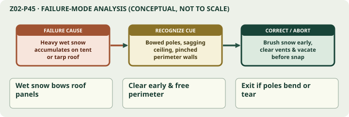

Z02-P45 · Shelter and housing · Adapted historical material
Recognize wet-snow accumulation and roof sag before frame collapse
Spot dangerous roof loading on tents and tarps during snowfall and relieve or vacate safely before poles snap.
When it applies · Occupied manufactured tents and tarps during wet snow, sleet or heavy overnight snowfall.
Equipment · Light, dry gloves, small snow brush or gloved hand and dry backup refuge plan.

Actions
- Monitor roof shape periodically during steady snowfall—heavy wet snow adds rapid load that bows fiberglass or aluminum poles and collapses flat roof panels long before morning.[E25, E20, ED]
- Tap gently from inside or brush snow off the outer fly carefully from outside before heavy buildup forms, clearing snow piles away from perimeter walls so the tent is not pinched inward.[E25, E20, ED]
- Keep upper vents and doorway tracks cleared as snow falls so drifting cannot seal fresh airflow or jam frozen zippers shut.[E25, E05]
Failure recognition · Sleeping through six hours of heavy wet snow in a flat-roofed three-season tent until poles snap onto sleeping occupants.[E25, E20]
Verify · Confirm poles retain smooth design curvature, walls stand clear of packed snowdrifts and exits open smoothly without binding.[E25, E20, ED]
Stop or change course · If wet snow loads faster than you can safely clear it, poles bend sharply or fabric tears, exit immediately while routes remain passable and move to substantial shelter.[E25, E14, E05]
Evidence and editorial notes
- E05 · NWS · What To Do If You're Caught in a Winter Storm (current web edition)
- Section: Outside and find shelter · Conditions: Cold, wet or windy winter conditions
Support: Block wind, stay dry and keep off cold ground. Keep exposure reduction separate from making a fire.
Limitations: Improvised windbreaks do not provide rated thermal protection or snow-load capacity. · Conflicting evidence: None; aligns with CDC-H.
Editorial note: Separates wind, ground, and moisture heat-loss pathways. · Specialist reviewer: Cold-weather shelter specialist
Primary source · checked 2026-11-24 - E14 · NWS · What To Do If You're Caught in a Winter Storm (current web edition)
- Section: In vehicles during a winter storm · Conditions: Vehicle stranded in winter weather with no immediate vehicle hazard
Support: Stay with the vehicle if a safe nearby destination is not obvious. Make the vehicle visible and notify others when possible.
Limitations: Snow-blocked exhaust pipes create rapid lethal CO hazards if an engine is run. · Conflicting evidence: None; keeps shelter decision distinct from idling engine advice.
Editorial note: Used for stranded-vehicle shelter and exhaust-hazard checks. · Specialist reviewer: Winter response and carbon monoxide safety
Primary source · checked 2026-11-24 - E20 · NPS · Camping: What to Bring (current web edition)
- Section: Camping: What to Bring > Shelter and Sleep System · Conditions: Overnight camping across three-season and cool conditions
Support: Match tent/tarp, groundsheet, sleeping pad, and sleeping bag ratings to expected night lows and precipitation; test pitching and inspect poles, zippers, and stakes before departure.
Limitations: Manufacturer comfort ratings assume dry insulation, ground pad use, and adequate caloric intake. · Conflicting evidence: None; reinforces pre-trip inspection and dry-sleep separation.
Editorial note: Anchors manufactured shelter selection, groundsheet fit, and gear readiness. · Specialist reviewer: Shelter equipment and field education
Primary source · checked 2026-11-24 - E25 · FEMA / Ready.gov · Winter Weather (current web edition)
- Section: Winter Weather > Stay Safe During Winter Storms · Conditions: Extreme cold, drifting snow, and power or travel disruption
Support: Prepare layered clothing, emergency shelter/heat alternatives, and vehicle winter kits; stay indoors during blizzards, protect against frostbite/hypothermia, and keep exhaust vents and exits clear of drifting snow.
Limitations: Drifting snow can block tent vents, doors, and vehicle tailpipes silently overnight. · Conflicting evidence: None; reinforces overnight exit/vent clearance checks.
Editorial note: Supports snow-drift exit maintenance and winter shelter failure recognition. · Specialist reviewer: Cold-weather shelter and emergency management
Primary source · checked 2026-11-24
Source lineage · NWS winter weather and B012 P12/P18; new manuscript · Classification · Adapted historical material.